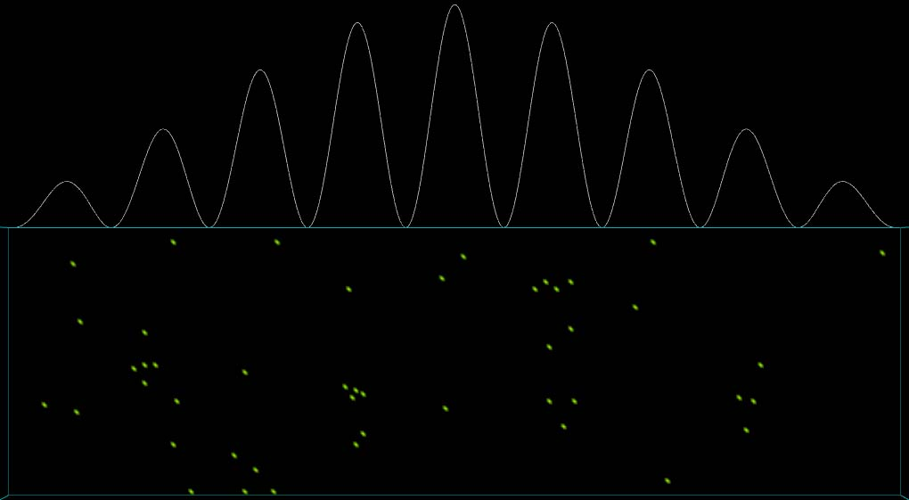
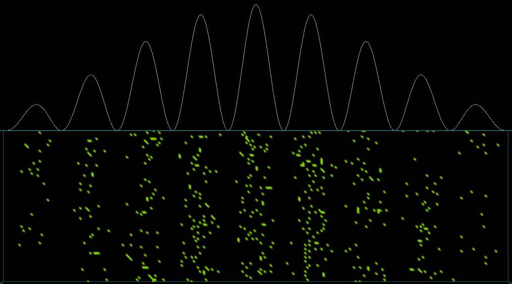
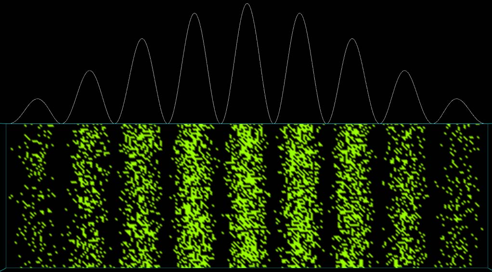

Definitions
λ = wavelength
w = slit width
d = distance between slits
η = number of photons per second incident on observation screen
Δ t = exposure time

Image 1: 50 photons
λ = 500 nm, w = 0.04 mm, d = 0.25 mm, η = 50 photons per second, Δt = 1s.
To download the high resolution image, copy the following link into your

Image 2: 500 photons
λ = 500 nm, w = 0.04 mm, d = 0.25 mm, η = 50 photons per second, Δt = 10s.
To download the high resolution image, copy the following link into your

Image 3: 5000 photons
λ = 500 nm, w = 0.04 mm, d = 0.25 mm, η = 200 photons per second, Δt = 25s.
To download the high resolution image, copy the following link into your